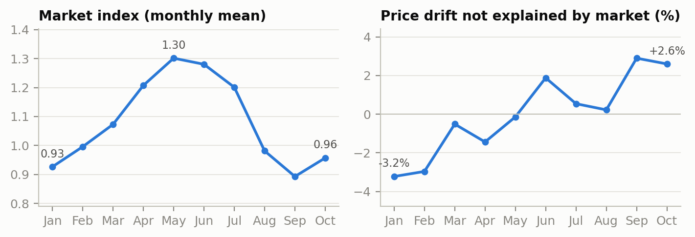
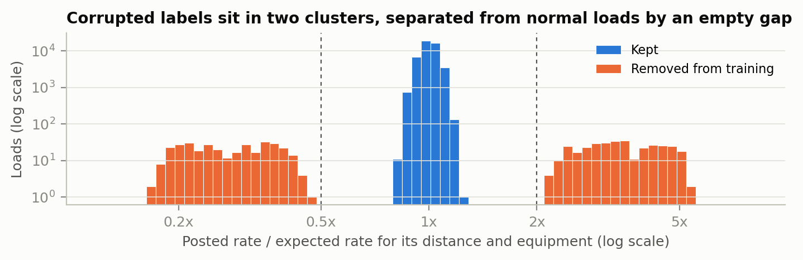
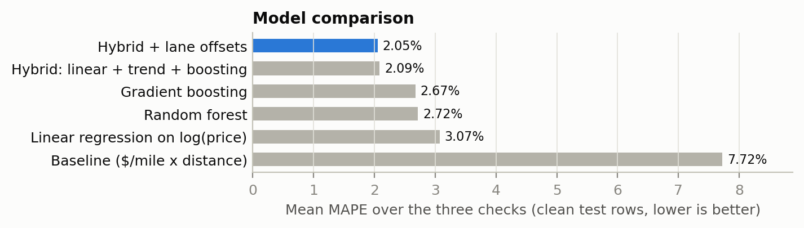
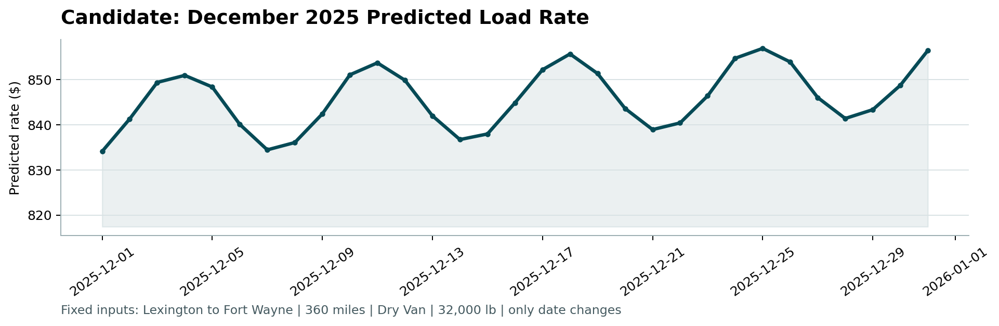

Spotter Machine Learning Engineer assessment · model report
The task is to predict the total posted rate (dollars per load) for 12,000 loads in November-December 2025, using 48,000 labelled loads from January-October 2025. Because the loads to predict all come after the labelled data, every validation decision here simulates that: models are always trained on earlier months and tested on the following two.
The final model is a four-stage hybrid: a linear model on log(price) for the main structure, a separately fitted time trend that can extend into Nov-Dec, gradient boosting for interactions, and small per-lane offsets. It is the best model on all three checks. Corrupted labels (about 1.4% of rows) cannot be predicted by any model; including them, error is about 4.3%.

| Issue | Rows | Evidence | Fix |
|---|---|---|---|
| Negative weight | 292 train / 145 validation | Distribution is an exact mirror of the positive weights: a sign error | Absolute value |
| Missing weight | 300 / 165 | Unrelated to price and equipment (looks random) | Training median |
| Missing market_index | 374 / 249 | A daily market level: spread within a day 0.025 vs 0.17 overall | Same-day average (fill error 0.020 vs 0.143 for a global median) |
| Corrupted posted_rate | 677 train (1.4%) | Priced at 0.15-0.5x (337) or 2-6x (340) the expected rate; a classifier could not predict them from the inputs (AUC 0.50) | Removed from training only; test scored on all rows and on clean rows |
| 8 cities unseen in training | 1,447 validation loads | Allentown, Charlotte, Chicago, Jackson, Knoxville, Laredo, Norfolk, San Diego | Use coordinates, not city names; tested with a held-out-city check |

Alternatives considered: capping outliers (keeps a wrong label, just less wrong), z-score/IQR rules on price alone (a $5,000 rate is normal for a long load and absurd for a short one), deleting rows with missing values (impossible in validation, where every row needs a prediction).
The loads to predict (Nov-Dec) come after all labelled data, so the test set must also come after its training set. A random split mixes days: a test load from 15 September has training loads from the 14th and 16th, which share its market level and drift, so the model barely has to forecast. Scoring the same hybrid both ways shows the effect:
| Split | MAPE |
|---|---|
| Random 80/20 split (months mixed) | 1.32% |
| Time split: train Jan-Aug, test Sep-Oct | 1.98% |
The random split looks 33% more accurate than it really is, and would have steered model choice toward models that memorise neighbouring days.
| Check | Construction | Question it answers |
|---|---|---|
| Jan-Jun -> Jul-Aug | Rolling time split | Is the model stable across periods, including a market downturn? |
| Jan-Aug -> Sep-Oct | Rolling time split | Closest to the real task: latest data, two-month horizon |
| Unseen cities (Sep-Oct) | 8 random cities removed from training entirely | Mimics the 8 new validation cities |
Used: distance and log(distance); equipment (one-hot); weight; market_index and its log; quote_signal; pickup and delivery latitude/longitude and their differences (direction); day of week; US holiday flag; days since 1 Jan (trend). Target: log(posted_rate), converted back to dollars at the end, so errors are relative and long and short loads count equally.
Dropped: load_id (an identifier); pickup/delivery city names. Coordinates carry the location effect and
also work for unseen cities; per-city averages made the holdout slightly worse. No scaling is needed: trees and ordinary least
squares are both unaffected by feature units.
| Model | Jan-Jun -> Jul-Aug | Jan-Aug -> Sep-Oct | Unseen cities (Sep-Oct) | Mean |
|---|---|---|---|---|
| Baseline ($/mile x distance) | 7.96% | 8.09% | 7.11% | 7.72% |
| Linear regression on log(price) | 3.92% | 2.46% | 2.84% | 3.07% |
| Random forest | 3.17% | 2.28% | 2.70% | 2.72% |
| Gradient boosting | 3.45% | 2.20% | 2.37% | 2.67% |
| Hybrid: linear + trend + boosting | 2.07% | 1.98% | 2.21% | 2.09% |
| Hybrid + lane offsets | 2.02% | 1.93% | 2.21% | 2.05% |
MAPE on clean test rows. Including corrupted rows, the final model scores 4.27% / 4.42% / 4.24%.

The linear model on log(price) is already a non-linear power-law in dollars and captures most of the structure, but it cannot learn interactions. Random forest and gradient boosting learn interactions, but trees cannot extrapolate: past the last training date they act as if the last month continues, so they miss the upward drift. Their Jul-Aug errors (3.2-3.5%) show this. The hybrid gives each part the job it is good at:
Tried and rejected: averaging 5 random seeds and blending with plain boosting (no gain); market index lagged 45-60 days (much worse, because it is confused with the trend); predicting which labels are corrupted (impossible, AUC 0.50). Tuning moved the mean by only about 0.05 points: the model is not sensitive to its settings.
Fixed load: Lexington to Fort Wayne, 360 miles, Dry Van, 32,000 lb; only the date changes. The chart file lacks coordinates and market inputs, so coordinates are looked up from the data and market_index / quote_signal are each date's average across the validation loads of that day.

score.py.pip install -r requirements.txt → python train.py (tuning and comparison, about 5 min) →
python predict.py (final fit, both prediction files) →
python score.py --predictions validation_predictions.csv --december-predictions december_chart_predictions.csv
→ python make_report.py (this report).